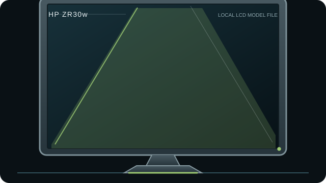

[ INDIVIDUAL COMPONENT // DISPLAYS ]
HP ZR30w
30-inch WQXGA professional LCD from HP’s Z Display generation, designed around high-bandwidth digital inputs.

IDENTIFICATION: Match the complete model and regional suffix on the rear label. This record summarizes published specifications; it is not a substitute for the exact unit manual, cable requirements or physical condition check.
Specifications
| Catalog subcategory | LCD displays |
|---|---|
| Exact product / family | HP ZR30w |
| Panel and native resolution | 30-inch S-IPS LCD, 2560 × 1600 (16:10) |
| Native timing | 2560 × 1600 at 60 Hz |
| Inputs / companion ports | DisplayPort and dual-link DVI-D; USB 2.0 hub |
| Revision and model distinction | Use HP documentation for the exact ZR30w model and regional part number. Do not infer HDMI/scaler behavior from newer Z-series monitors. The USB hub requires a separate upstream connection and does not carry video. |
Host compatibility and connection notes
A host must provide a compatible DisplayPort or dual-link DVI-D signal at 2560 × 1600. The DVI connection must be genuinely dual-link for native resolution; ordinary single-link DVI and passive HDMI adapters are not equivalent. It has no HDMI input.
The 30-inch CCFL-era panel is physically heavy and draws more power than modern LED-backlit models. Check lamp aging, uniformity and power behavior; internal service requires qualified procedures.
Preservation notes
Record the rear-label model, serial/date code, included stand/accessories, tested input, source timing, image condition and calibration state. Keep the matching manual and cable/adaptor chain with the unit; use qualified service procedures for internal work.
Manufacturer documentation and sources
- HP — ZR30w product specificationsHP technical specifications for the ZR30w.
- HP ZR30w manual/specification copyModel-specific archived guide; verify the cover/model marking before applying service details.